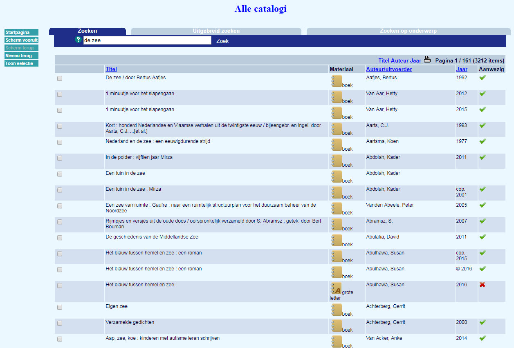

- 2006 - zbb live
- 2009 - etalages
- 2009-2011 - uitrol
- 2012 - Liquid
- sept 2013 - goPress
- 2013-2014 - Mijn Bib
- dec 2013
- 2014 - metacontent
- okt 2014 - MB mobiel
- 2014-2015 - uitbreiding
- voorj. 2015 - onderzoek
- jul 2015 - redesign cat.
- dec 2015 - autocomplete
- mrt 2016 - MB lijsten
- 1 sep 2016 - BP 3.0
- voorj. 2017 - aanbesteding
- najr. 2017 - start ontw.
- dec 2017 - O-Vl. sites
- 2018 - nieuwe naam
- voorj. 2018 - prototype
- zomer 2018 - pilootwebsites
-
zoeken.bibliotheek.be gaat live
2006De eerste versie van ZBB wordt gelanceerd en is in eerste instantie gericht op bibliotheekmedewerkers die aan catalografie doen en nog niet zo zeer bedoeld voor het grote publiek.
-
De eerste webetalages
2009De eerste bibliotheken beginnen met het etaleren van hun collectie en diensten binnen de catalogus of hun website. De bibliotheek van Brugge met Cabrio was er als één van de eersten bij.

-
Provinciale bibliotheekportalen
2009-2011De PBS-catalogi maken de omschakeling van de OPAC van hun bibliotheeksysteem naar de aquabrowser. Zo krijgen bibliotheekgebruikers in heel Vlaanderen stilaan een consistente zoekomgeving voorgeschoteld.
Hoe meer bibliotheken aansluiten, hoe groter de virtuele collectie wordt die bibgebruikers kunnen doorzoeken, dat merken alle bibliotheken ook aan het stijgende gebruik van interbibiothecair leenverkeer (IBL).
 -
Nieuw design en metacontent
2012In 2012 krijgt de aquabrowser de 'liquid' look die we nu nog kennen:
meer witruimte opdeling in blokken 'zoekspin' verdwijnt -
Koppeling GoPress
September 2013De GoPress kranten- en tijdschriftendatabank wordt gekoppeld aan de aquabrowser. Het wordt mogelijk om gericht te zoeken in dit archief en daarnaast worden gebruikers ook tussen de zoekresultaten naar bibliotheekitems geattendeerd op gerelateerde artikels. Mediargus wordt uitgefaseerd.

-
Mijn Bibliotheek live
2013-2014Mijn Bibliotheek wordt in 2013 uitgerold in de provincies Vlaams-Brabant en Antwerpen. Een jaar later volgen Oost- en West-Vlaanderen en sluiten ook enkele losse bibliotheken aan.
Mijn Bibliotheek is de self service omgeving waarmee bibliotheekgebruikers hun uitleningen en reserveringen kunnen beheren. Mijn Bibliotheek vervangt de systeemspecifieke diensten van de bibliotheeksystemen en geeft gebruikers het voordeel dat ze met één account meerdere lidmaatschappen, ook over bibliotheken heen, kunnen beheren. De Mijn Bibliotheek account is daarnaast ook de toegangssleutel tot de digitale collecties van de bib. -
Limburgse bibliotheekwebsites gelanceerd
December 2013De bib van Lanaken is de eerste die het Limburgse websiteplatform voor bibliotheken in gebruik neemt. De websites maken gebruik van een preproductieversie van de bibliotheekportalen API om bibitems in de kijker te plaatsen.

-
Basispakket metacontent uitgebreid
2014Er wordt een nieuwe overeenkomst gesloten met NBD Biblion, waardoor extra covers, samenvattingen en recensies de catalogus verrijken. De eerste boekenrecensies uit het GoPress krantenarchief vinden ook hun weg naar de catalogus. De extra covers vormen ook een bonus voor de bibliotheekwebsites en -etalages die van de aquabrowser-API gebruik maken.
-
Mijn Bibliotheek klaar voor mobiel gebruik
Oktober 2014 De Mijn Bibliotheek website krijgt een responsief design, zodat de dienst makkelijker te gebruiken wordt via smartphones en tablets. De mobiele website is bruikbaar op alle toestellen, ongeacht het mobiele besturingssyteem.
De Mijn Bibliotheek website krijgt een responsief design, zodat de dienst makkelijker te gebruiken wordt via smartphones en tablets. De mobiele website is bruikbaar op alle toestellen, ongeacht het mobiele besturingssyteem.
-
Nog meer bibs sluiten aan &
2014-2015
API wordt gelanceerdBibliotheken die niet op een PBS zijn aangesloten kunnen als ze dat wensen ook aansluiten op bibliotheekportalen. Samen met vele extra PBS-instappers maakt dit dat stilaan bijna alle Vlaamse bibliotheekcatalogi aangesloten zijn op bibliotheekportalen.
De aquabrowser krijgt een API, wat het voor ontwikkelaars mogelijk maakt om op het even welke website data uit de catalogus te gebruiken. De provinciale bibliotheekwebsites gebruiken deze om via covercarrousels collecties in de kijker te plaatsen.

-
Gebruikersonderzoek catalogus
April-juli 2015We organiseren een eerste groot gebruikersonderzoek waarbij we focussen op:
Wie bezoekt de catalogus + waarom? Wat doen de gebruikers (toptaken) Welke problemen ervaren gebruikers met de interface?
Dat de beschikbaarheid checken en het doorzoeken van de collectie de voornaamste taken zijn mag niemand verrassen. Wel opvallend was het relatief hoge gebruik (+25%) vanuit de onderwijscontext. We leerden ook dat gebruikers graag recensies lezen en kregen een resem detailopmerkingen om de interface helderder te maken. -
Aquabrowserdesign wordt opgefrist. Nieuwe functies doen hun intrede
Juli 2015Zowel de look als de functionaliteit van de aquabrowser krijgen een update. Het uiterlijk wordt meer in lijn gebracht met moderne inzichten over webdesign. Het lettertype, de witruimte en de knoppen krijgen een update.
Functioneel wordt de beschikbaarheidsinformatie op het 'waar staat het' scherm onder handen genomen. Wanneer iemand verder wil zoeken in andere bibliotheken worden nu over provinciegrenzen heen de meest nabije bibliotheken getoond.
-
Nog meer functionaliteiten in de aquabrowser
December 2015Als deze tijdslijn iets duidelijk maakt is het dat we voortdurend leren van feedback van bibliotheken en gebruikers en de webdiensten daar naar aanpassen. 2015 werd zo een druk jaar voor vernieuwingen aan de aquabrowser, na de zomerupdate werden op het einde van het jaar drie andere grote vernieuwingen geïntroduceerd, in opvolging van het gebruikersonderzoek eerder dat jaar:
Autocomplete Mijn Lijsten voor bibmedewerkers Nieuwe weergave van edities en versies
De autocomplete-functie helpt onder meer met het voorkomen van typefouten, de nieuwe weergave van edities en versies moet gebruikers duidelijker maken welke uitgavevorm van een werk er allemaal beschikbaar zijn. -
Mijn Bibliotheek Lijsten voor het publiek
Maart 2016In de maand maart van 2016 komt de 'Mijn Lijsten' functionaliteit ook beschikbaar voor het brede publiek. Tegelijkertijd wordt de My Discoveries dienst uitgefaseerd. Mijn Lijsten kent een snelle start en wordt door aardig wat gebruikers opgepikt. Op dit moment gebruikt zo'n 5% van de gebruikers het systeem op regelmatige basis en loopt er een onderzoek naar hoe we nog meer gebruikers warm kunnen maken om er mee aan de slag te gaan.

-
Start project Bibliotheekportalen 3.0
September 2016Naar aanleiding van de Vlaamse regeringsbeslissing om de provinciale taken rond streekgericht bibliotheekbeleid over te hevelen naar het Vlaamse niveau wordt een onderzoek gestart naar de noodzaak om de bestaande websiteplatformen te continuëren. Dat mondt uit in het huidige project voor nieuwe bibliotheekwebsites die de bestaande platformen én de bestaande verschillende websites voor catalogus, bib en Mijn Bibliotheek op één platform wil brengen.

-
Op zoek naar een leverancier
1ste helft 2017 Met de functionaliteiten van alle bestaande sites en de verbeteringen die we willen realiseren in het achterhoofd start het werk aan een bestek en de aanbestedingsprocedure. Na een grondige evaluatie wordt besloten in zee in te gaan met WunderKraut. Een drupal-agency met kantoren in Gent en Antwerpen dat onder meer ervaring heeft met de webdiensten van de collega's van Publiq (Uit-databank).
Met de functionaliteiten van alle bestaande sites en de verbeteringen die we willen realiseren in het achterhoofd start het werk aan een bestek en de aanbestedingsprocedure. Na een grondige evaluatie wordt besloten in zee in te gaan met WunderKraut. Een drupal-agency met kantoren in Gent en Antwerpen dat onder meer ervaring heeft met de webdiensten van de collega's van Publiq (Uit-databank).
Tegelijkertijd starten we samen met de bibliotheken uit de klankbordgroep een reeks workshops op rond:responsive design voor de bibcataloguspagina's gebruikersscenario's gebruikerstesten -
Start ontwikkeling - meer workshops
Zomer 2017In de zomer van 2017 voeren we samen met de bibs nog een laatste keer gebruikerstesten uit op de bestaande catalogus. We willen nog meer leren over het gebruik van autocomplete, beschikbaarheidsinformatie en Mijn Lijsten. We zijn nu klaar om de ontwikkeling op te starten. In september 2017 is het zover.
-
Oost-Vlaamse sites live
Najaar 2017Samen met WunderKraut ronden we het onderzoek naar de gewenste functionaliteiten af met een workshop met de bibs over specifieke functionaliteiten zoals webformulieren, content delen en verfijningen. In de bib van Waregem is er een workshop met het publiek van de bib: de eindgebruiker.
Naast het werk aan de eigenlijke nieuwe websites wordt tussentijds een zijproject voor de Oost-Vlaamse bibwebsites gerealiseerd. Zij krijgen eind 2017 alvast een nieuwe startpagina met basisfunctionaliteiten ter vervanging van het Oost-Vlaamse platform dat vanaf 1 januari 2018 niet meer gecontinueerd kan worden.
-
Een nieuwe naam
2018De werknaam 'bibliotheekportalen 3.0' wordt vervangen door simpelweg: bibliotheekwebsites
-
Prototype bouw en testing
Voorjaar 2018Voor het catalogusluik van de website kiezen we er meteen voor om een werkend prototype te bouwen. Dat laat ons toe om in de praktijk na te gaan of de grote variëteit aan catalogusdata goed doorkomt in de nieuwe site.
Het prototype is eerder functioneel en nog niet voorzien van een design-laag. We gebruiken het ook om gewijzigde functionaliteiten zoals de nieuwe weergave van filters uit te testen bij het publiek. -
Pilootwebsites live
Zomer 2018We vonden binnen de klankbordgroep drie pilootbibliotheken bereid om samen met ons de kinderziektes te ontdekken en de nieuwe sites uit te testen. In Eeklo, Mechelen en Waregem draait sinds juli van dit jaar een volledig werkende site.
Ten opzichte van het prototype is er nu een designlaag bijgekomen en zijn ook de overige websitefunctionaliteiten aanwezig. We verzamelen onmiddellijk feedback van de gebruikers en sturen de functionaliteiten en het design van de sites bij in functie van het live gaan van de ‘echte’ site voorzien eind 2018.